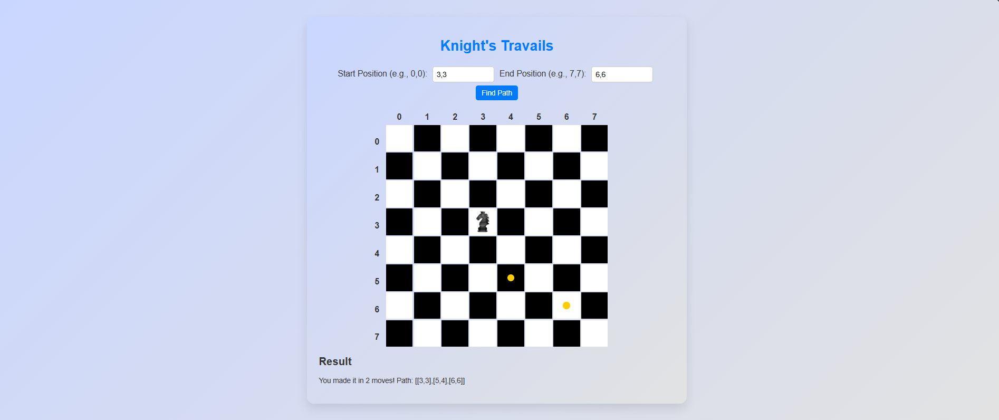

My work
Signup_form

A form that allows users to register an account by providing necessary information such as username, email, and password.
Admin_Dashboard
A centralized user interface for administrators to manage and monitor various aspects of a website or application, such as user data, analytics, and settings.
Library
A collection of software tools, code, or resources that can be used to perform specific tasks, such as managing books, media, or digital assets.
Tic-tac-toe
A simple two-player game where players take turns marking a 3x3 grid with 'X' and 'O' aiming to get three of their marks in a row horizontally, vertically, or diagonally.
todo-list
A digital or physical list used to track tasks or items that need to be completed, typically including tasks, due dates, and status indicators.
restaurant-project
A project or application designed to manage restaurant operations, including ordering, menu management, reservations, and payment processing.
weather-app
An application that provides current weather information, forecasts, and sometimes historical data, often integrating with APIs to get real-time weather data.
recursion
A programming technique where a function calls itself in order to solve smaller sub-problems. Commonly used in algorithms and data structures like trees and graphs.

Linked-list
A data structure consisting of a sequence of nodes where each node contains data and a reference to the next node in the sequence, useful for implementing dynamic data structures.
HashMap
A data structure that implements an associative array, a structure that maps keys to values, allowing for fast data retrieval and management using a hash function.

Knight-travails
A classic problem in computer science where the goal is to move a knight piece on a chessboard from a starting position to an ending position in the minimum number of moves, adhering to the rules of the knight's move in chess.
Battleship
A classic problem in computer science where the goal is to move a knight piece on a chessboard from a starting position to an ending position in the minimum number of moves, adhering to the rules of the knight's move in chess.